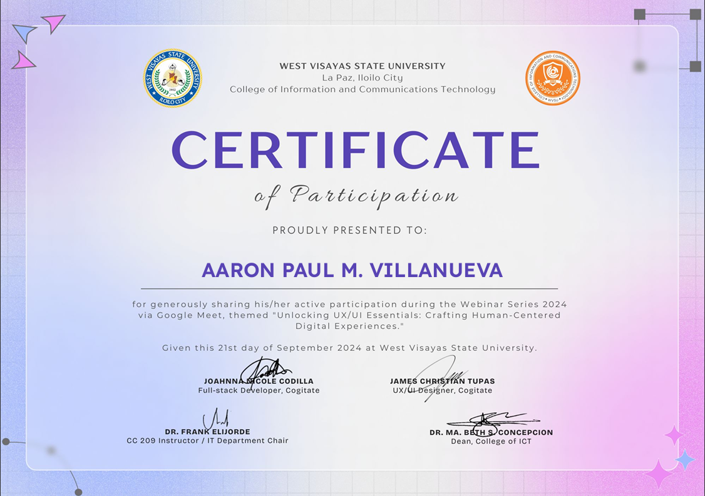
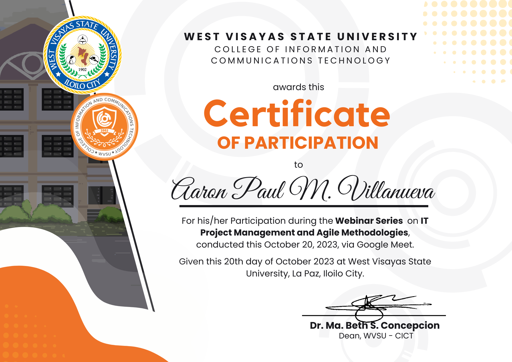
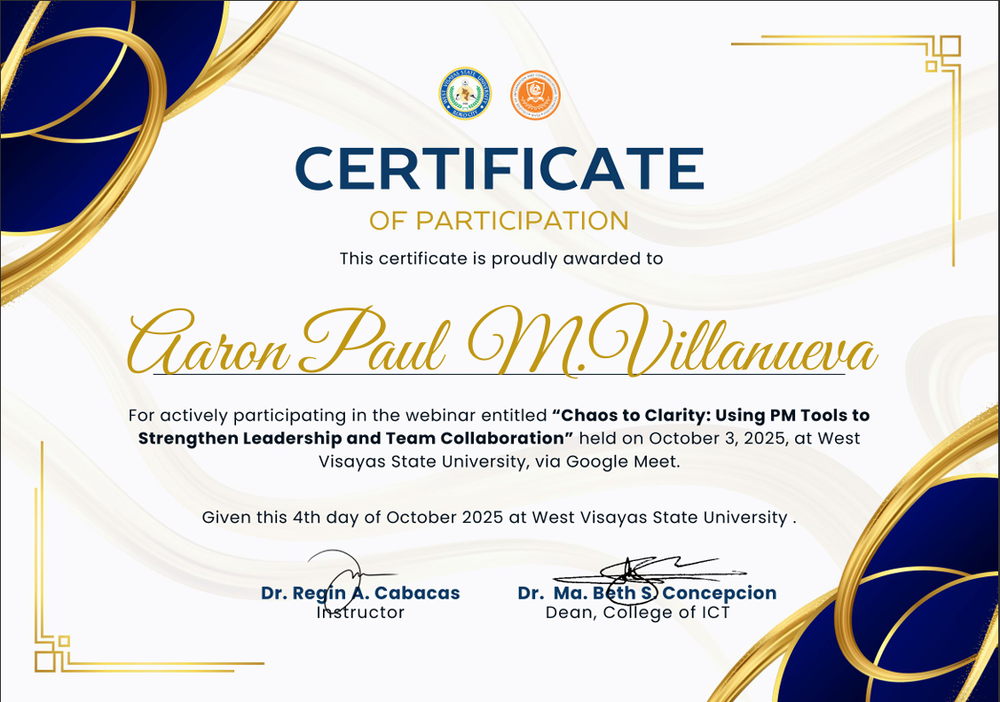
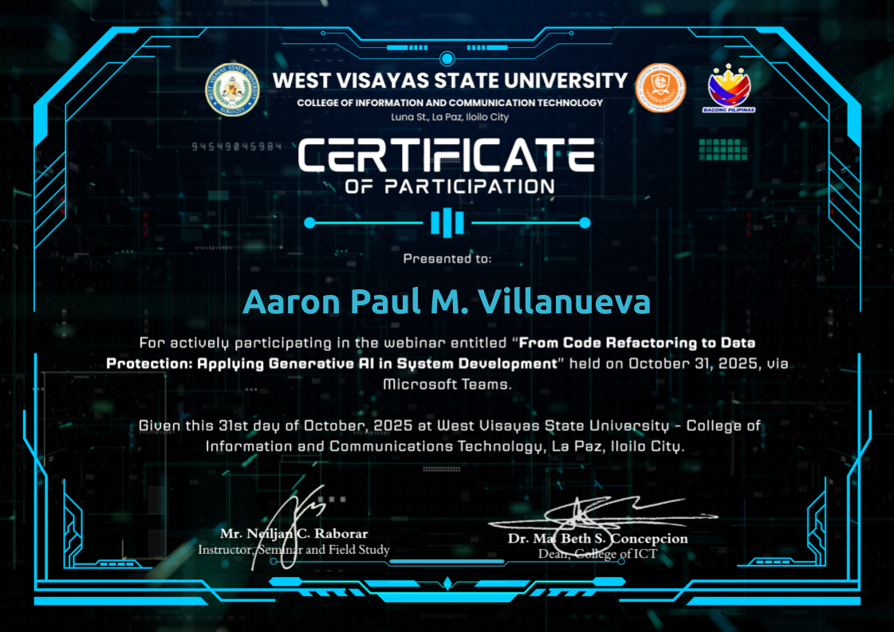
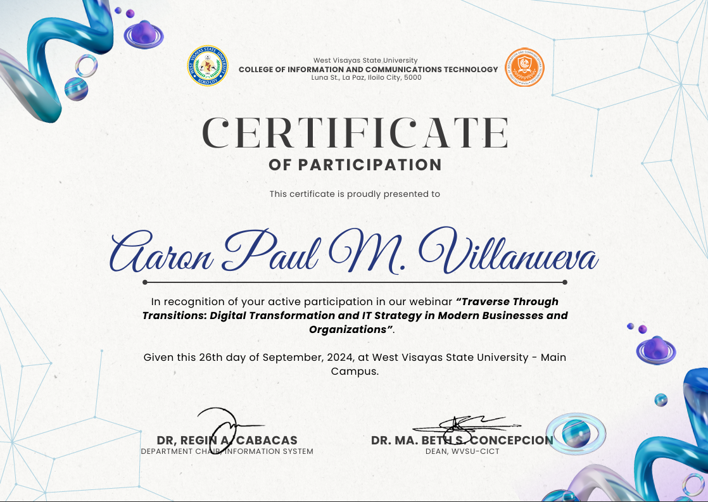
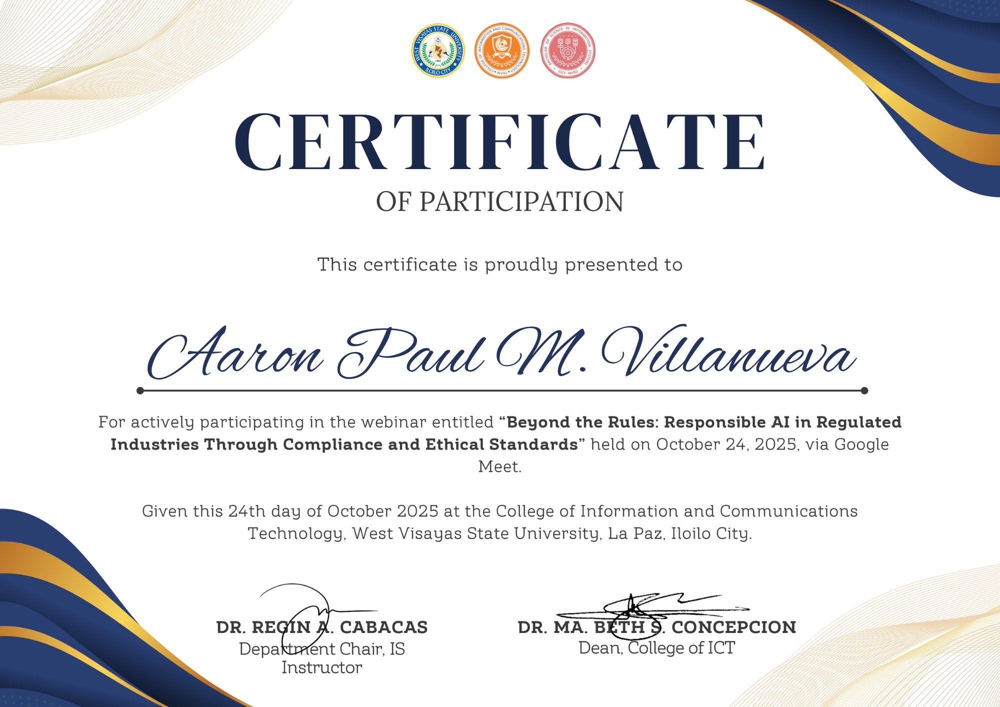

Information Systems Student · Learning Mobile & Web · Exploring Analytics
Turning real-world processes into
efficient digital systems.
I’m an Information Systems student at West Visayas State University who
is gaining experience in
mobile apps, POS & inventory systems, and data-driven platforms. I’m open to internship opportunities in
cybersecurity, fintech, software development, and data analytics
where I can keep learning and contribute to real projects.
I am an Information Systems student at
West Visayas State University – Main Campus
who enjoys turning manual, paper-based processes into clear digital
workflows for real users.
My work spans
mobile wellness apps
like HealthTrack,
POS and inventory systems
such as AVIDSync and Crismille, and a
Red Cross blood inventory ecosystem with forecasting and a donor
web app. I also explore
data analytics and machine learning
through projects like the Used Car Price Prediction web app.
Across these projects I focus on
solid data structures and database design, analytics-driven decision support, and UI/UX that feels simple even
when the system underneath is complex. I am continually learning tools
like Flutter, PHP, JavaScript, Python (pandas, NumPy, scikit-learn),
Power BI, and Supabase APIs, and I’m especially interested in growing
my understanding of modern quality and information security standards as
a student.
Learning AWS and other cloud services, strengthening my foundation
in cybersecurity and secure system design, and actively building the
skills I need to grow my overall technological knowledge.
Projects
A selection of projects focused on wellness tracking, decision support,
and secure information systems.
HealthTrack – Fitness Tracking App
Mobile app for tracking steps, water intake, and outdoor
activities using device sensors and smart notifications.
Flutter
• Integrated
pedometer for automatic step
counting and daily progress.
• Used
geolocator to track GPS-based
outdoor activities.
• Implemented
flutter_local_notifications for
hydration and activity reminders.
• Designed the dashboard UI and navigation flow.
Additional Information
HealthTrack is built with Flutter and follows an
object-oriented structure with clear separation of concerns
between models, services, screens, and widgets.
Core Features
• Step Counter – Uses the
accelerometer to count steps and track walking or jogging.
• Activity Tracking –
Records outdoor activities with GPS tracking, distance
calculation, and route mapping.
• Water Intake Monitoring
– Tracks daily water consumption and reminds users to stay
hydrated.
• Notification Reminders
– Scheduled alerts for activity goals and hydration.
Sensors & Packages
• Accelerometer (Step Counter) – Package:
pedometer. Detects movement and measures the user's steps.
Integrated POS, inventory, and online wellness shop built as a PHP
site with rule-based recommendations and a promotional storefront.
PHP · MySQL
• Designed the overall POS and e-commerce architecture, connecting
in-store inventory with the AVIDSync wellness shop.
• Implemented inventory
CRUD logic, stock monitoring, and
rule-based recommendations for restocking and featured products.
• Built the front-end shop experience with campaigns, flash sales,
and recommendation sections.
• Integrated and trained a live-chat style chatbot to answer customer
questions while browsing.
Interface & User Experience
• Clean navigation bar with product categories (Supplements,
Vitamins, Fitness, General Wellness, Wellness Tech, Personal Care),
global search, and login entry.
• Hero banner section for major campaigns and promotions (for
example, Oura rings up to 20% off).
• Flash Sales area showing discounts with real-time countdown
timers.
• Product cards with images, prices, star ratings, review counts,
and discount labels, plus recommendation sections such as
Best Selling Price and
For You.
• Embedded live-chat widget so customers can ask questions while
browsing.
System Perspective
• POS and inventory features share the same product and stock data
as the AVIDSync shop, keeping in-store and online sales aligned.
• Rule-based recommendations highlight products for restocking and
feature them in the storefront for higher visibility.
• The UI was designed to match AVID branding while keeping the
layout simple and easy to extend with a backend cart and checkout.
ISO-aligned information system for managing blood inventory, donor
data, and hospital requests with forecasting.
PHP · REST · Supabase
• Integrated time-series forecasting
for blood demand prediction.
• Built modules for
inventory tracking and hospital
request automation.
• Developed donor application integration and monitoring features.
System Overview
• Real-time blood inventory
management – Tracks blood stock levels across
facilities and blood types.
• Predictive blood demand analysis
using time series forecasting to anticipate needs during events
such as Dinagyang, elections, and local fiestas.
• Hospital blood request system –
Hospitals can request units directly, with automated responses for
full or partial fulfillment.
Donor Experience (Web & Mobile)
• Donor-facing app and web interface (including the
Red Cross Donor Web App
collaboration) let donors track their blood from collection to
usage, similar to parcel tracking.
• Donors can see statuses such as testing, storage, and dispensed,
and receive notifications when their blood type is urgently needed.
• The app shows eligibility countdowns for the next donation,
donation history, and health tips to support retention.
• A GIS-style view of Red Cross locations helps donors find nearby
centers.
Analytics, Forecasting & Administration
• Real-time dashboards for administrators to monitor supply
trends, donor activity, and hospital requests.
• Event-based demand forecasting to support planning for festivals,
disasters, and other high-risk periods.
Security & Quality Goals
• Designs consider secure user authentication, role-based access,
and encryption (for example, AES-256 for sensitive records).
• The project takes inspiration from quality and information
security standards such as ISO 9001 and ISO 27001 and explores
ideas like incident response planning and continuous improvement.
• Emphasis on protecting donor and patient data and aligning with
data privacy requirements.
• Assisted with financial records and auditing processes, improving
attention to detail and data accuracy.
• Applied organizational skills in managing documents and reports.
• Strengthened communication and collaboration in a professional
environment.
Seminars & Certificates
Selected seminars, trainings, and conferences that strengthened my
foundation in UX, cybersecurity, AI, project management, and modern
software practices.
Unlocking UX/UI Essentials: Crafting Human-Centered Digital
Experiences
West Visayas State University – Main · September 21, 2021
IT Project Management and Agile Methodologies
West Visayas State University – Main · October 20, 2023
Traverse Through Transitions: Digital Transformation and IT
Strategy
West Visayas State University – Main · September 21, 2024
Design with Purpose: Usable and Accessible UX for the Future
West Visayas State University – Main · September 19, 2025
Artificial Intelligence in Governance: Promise and Ethical Issues
West Visayas State University – Main · September 26, 2025
Chaos to Clarity: Using PM Tools to Strengthen Leadership and Team
Collaboration
West Visayas State University – Main · October 3, 2025
SHIFT-LEFT SECURITY: Building Safer Pipelines with DevSecOps
and Automated Checks
West Visayas State University – Main · October 17, 2025
Cybersecurity Career Insights: Building a Path in the Digital World
West Visayas State University – Main · October 17, 2025
Beyond the Rules: Redefining Responsible AI in Regulated Industries
West Visayas State University – Main · October 24, 2025
From Code Refactoring to Data Protection: Applying Generative AI in
System Development
West Visayas State University – Main · October 31, 2025
From Data to Decisions: Building Intelligence Through Analytics
Engineering
West Visayas State University – Main · October 31, 2025
Certificate Snapshots

Unlocking UX/UI Essentials

IT Project Management & Agile

Chaos to Clarity
Shift-Left Security
AI in Governance

Generative AI in System Development

Traverse Through Transition
Cybersecurity Career Insights
Design With Purpose

Beyond The Rules
Beyond Hello World
Contact
I’m open to internship opportunities, collaborations, and projects
especially in mobile apps, web systems, cybersecurity, fintech, software
development, data analytics, and information systems.
For opportunities or questions, please reach out using any of the
contacts below.